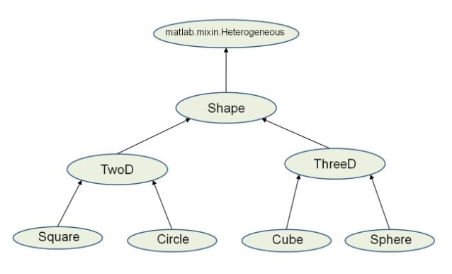
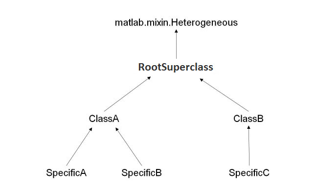
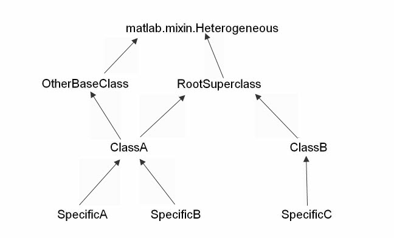
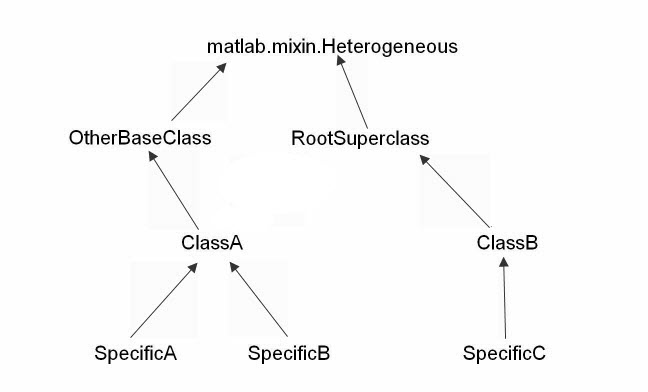

Designing Heterogeneous Class Hierarchies
Creating Classes That Support Heterogeneous Arrays
This topic describes the concepts involved in defining classes that support the formation of heterogeneous arrays. For information on the concatenation of existing MATLAB® objects, see these topics.
For an example that uses heterogeneous arrays, see A Class Hierarchy for Heterogeneous Arrays.
MATLAB Arrays
MATLAB determines the class of an array by the class of the objects contained in the array. MATLAB is unlike some languages in which you define an array of object pointers or references. In these other languages, the type of the array is different from the type of an object in the array. You can access the elements of the array and dispatch to methods on those elements, but you cannot call an object method on the whole array, as you can in MATLAB.
Object arrays in MATLAB are homogeneous in class. Because of this homogeneity, you can perform operations on whole arrays, such as multiplying numeric matrices. You can form heterogeneous arrays by defining a hierarchy of classes that derive from a common superclass. Cell arrays provide option for an array type that can hold different kinds of unrelated objects.
Heterogeneous Hierarchies
You can form arrays of objects that are subclasses of a common superclass when these classes are part of a heterogeneous hierarchy. A MATLAB heterogeneous class hierarchy:
Derives from
matlab.mixin.HeterogeneousDefines a single root superclass that derives directly from
matlab.mixin.HeterogeneousSeals methods that are inherited by subclasses.
For example, in the following diagram, Shape is the root of the heterogeneous hierarchy.

Heterogeneous Arrays
A heterogeneous array is an array of objects that differ in their specific class, but all objects derive from or are instances of a common superclass. The common superclass forms the root of the hierarchy of classes that you can combine into heterogeneous arrays.
The common superclass must derive from matlab.mixin.Heterogeneous. Methods that you can call on the array as a whole must have the same definitions for all subclasses.
Heterogeneous hierarchies are useful to:
Create arrays of objects that are of different classes, but part of a related hierarchy.
Call methods of the most specific common superclass on the array as a whole
Access properties of the most specific common superclass using dot notation with the array
Use common operators that are supported for object arrays
Support array indexing (scalar or nonscalar) that returns arrays of the most specific class
Heterogeneous Array Concepts
Heterogeneous array — An array in which two or more elements belong to different specific classes. All elements derive from the same root superclass.
Root superclass — Class derived directly from
matlab.mixin.Heterogeneous. The root superclass can be abstract or concrete. Only concrete subclasses of the root superclass can form heterogeneous arrays.Most specific common superclass — The most specific class in the inheritance hierarchy from which all the objects in a heterogeneous array derive. The most specific common superclass can be the root superclass or a more specific superclass shared by the objects currently in the array.
Class of a heterogeneous array — The most specific common superclass from which all objects in the heterogeneous array derive. Adding and removing objects from a heterogeneous array can change the most specific superclass shared by the instances. This change results in a change in the class of a heterogeneous array. The most specific common superclass can be abstract.
Nature of Heterogeneous Arrays
The heterogeneous hierarchy in this diagram illustrates the characteristics of heterogeneous arrays concerning:
Array class
Property access
Method invocation

Class of Heterogeneous Arrays
The class of a heterogeneous array is that of the most specific superclass shared by the objects of the array.
If the following conditions are true, the concatenation and subscripted assignment operations return a heterogeneous array:
The objects on the right side of the assignment statement are of different classes
All objects on the right side of the assignment statement derive from a common subclass of
matlab.mixin.Heterogeneous
For example, form an array by concatenating objects of these classes. The class of a1 is ClassA:
a1 = [SpecificA,SpecificB]; class(a1)
ans = ClassA
If the array includes an object of the class SpecificC, the class of a2 is RootSuperclass:
a2 = [SpecificA,SpecificB,SpecificC]; class(a2)
ans = RootSuperclass
If you assigned an object of the class SpecificC to array a1 using indexing, the class of a1 becomes RootSuperclass:
a1(3) = SpecificC; class(a1)
ans = RootSuperclass
If the array contains objects of only one class, then the array is not heterogeneous. For example, the class of a is SpecificA.
a = [SpecificA,SpecificA]; class(a)
ans = SpecificA
Property Access
Access array properties with dot notation when the class of the array defines the properties. The class of the array is the most specific common superclass, which ensures all objects inherit the same properties.
For example, suppose ClassA defines a property called Prop1.
a1 = [SpecificA,SpecificB]; a1.Prop1
Referring to Prop1 using dot notation returns the value of Prop1 for each object in the array.
Invoking Methods
To invoke a method on a heterogeneous array, the class of the array must define or inherit the method as Sealed. For example, suppose RootSuperclass defines a Sealed method called superMethod.
Call the method on all objects in the array a2:
a2 = [SpecificA,SpecificB,SpecificC]; a2.superMethod
Sealing the method (so that it cannot be overridden in a subclass) ensures that the same method definition exists for all elements of the array. Calling that method on a single element of the array invokes the same method implementation as calling the method on the whole array.
Unsupported Hierarchies
Heterogeneous hierarchies cannot have ambiguities when obtaining default objects, determining the class of the array, and converting class objects to other types. Members of the hierarchy can derive from only one root superclass (that is, from only one direct subclass of matlab.mixin.Heterogeneous).
This diagram shows a hierarchy that is not allowed:

ClassA derives from two classes that are subclasses of matlab.mixin.Heterogeneous.
The next diagram shows two separate heterogeneous hierarchies. ClassA has only one root superclass (called OtherBaseClass). The heterogeneous hierarchy is no longer ambiguous:

Default Object
A default object is the object returned by calling the class constructor with no arguments. MATLAB uses default objects in these situations:
Indexed assignment creates an array with gaps in array elements. For example, assign the first element of array
hto index5:h(5) = ClassA(arg1,arg2);
MATLAB fills the unassigned positions with default objects.
Loading a heterogeneous array from a MAT-file when the class definition of a specific object in the array is not available. MATLAB replaces the object with the default object.
Heterogeneous hierarchies enable you to define the default object for that hierarchy. The matlab.mixin.Heterogeneous class provides a default implementation of a method called getDefaultScalarElement. This method returns an instance of the root class of the heterogeneous hierarchy, unless the root superclass is abstract.
If the root superclass is abstract or is not appropriate for a default object, override the getDefaultScalarElement method. Implement the getDefaultScalarElement override in the root superclass, which derives directly from matlab.mixin.Heterogeneous.
getDefaultScalarElement must return a scalar object that is
derived from the root superclass. For specific information on how to implement this
method, see matlab.mixin.Heterogeneous.getDefaultScalarElement.
Conversion During Assignment and Concatenation
If you create a heterogeneous array that contains objects that are not derived from the same root superclass, MATLAB attempts to call a method called convertObject. Implement convertObject to convert objects to the appropriate class. There is no default implementation of this method.
To support the formation of heterogeneous arrays using objects that are not part of the heterogeneous hierarchy, implement a convertObject method in the root superclass. The convertObject method must convert the nonmember object to a valid member of the heterogeneous hierarchy.
For details on implementing the convertObject method, see matlab.mixin.Heterogeneous.
Empty Arrays of Heterogeneous Abstract Classes
For homogeneous arrays, MATLAB does not allow you to initialize an empty array of an abstract class. However, if the class is part of a heterogeneous hierarchy, you can initialize empty arrays of an abstract class. Initializing an empty heterogeneous array is useful in cases in which you do not know the class of the concrete elements in advance.
For example, suppose RootSuperclass is an abstract class that is the root of a heterogeneous hierarchy. Initialize an array using the empty static method:
ary = RootSuperclass.empty;